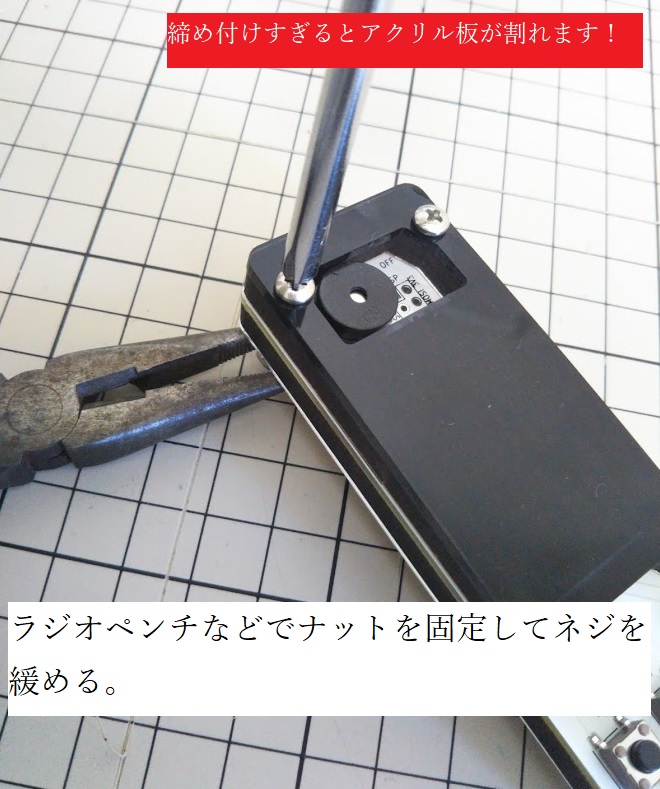
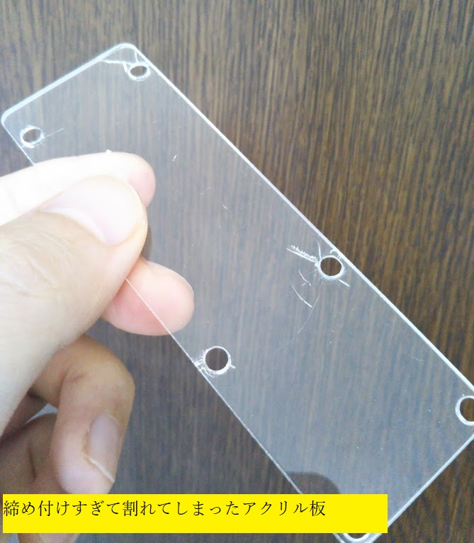

<HACHIBARに戻る
このページではHACHIBARの電池交換方法を紹介します。
## 分解
HACHIBARは6か所のネジで固定しています。
これらのネジは、ナットで締め付けてあります。
このネジとナットは締め付けを強くするための接着剤で固定されており、ドライバーで緩めるためにはコツが必要です。
また、裏面の1mmのアクリル板がネジの**締め付けにより割れてしまう**ことがあるため、ネジを締める際は**指で回す程度の力**で締め付けてください。（奥まできつく締めなくても、前述の接着剤により十分固定できます。）


## 電池の種類
CR2032です。
---
<HACHIBARに戻る